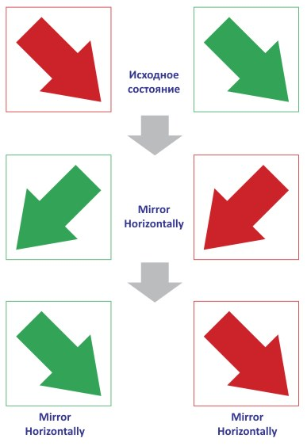
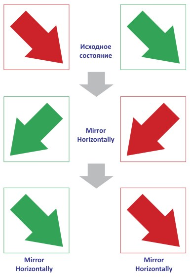

Собственно, если есть идеи, из которых получатся полезные макросы, излагайте. :)
Des425 / 24.02.2010, 15:11/15:14
sizePagetoFIT - Это понравилось!
delPage - эту функцию можно стандартными средствами настроить!
А тот что на видео показан, он где? Вот он бы пригодился!
Abarmot / 24.02.2010, 16:36
Des425, sizePagetoFIT - это не моё , с другой сборки попало . Вот Вам тот что на видео One_click_dimension , делал под ширину фрез, соответственно работает с толщинами линий 46, 36, 28 , 12 , 8 , 3 , 30 мм . Толщина линии самой детали 0,2 мм.
One_click_dimension - это не то, я думал он автоматом сразу все выбранные объекты размечает! При применение этой функции к некоторым объектам, Corel слетает!
Abarmot / 25.02.2010, 02:00
Ну ...извините , там совсем другая идея заложена :)
sassisa / 28.02.2010, 11:55
а я никак не могу найти макрос, который рисует серединные линии чего либо В основном это касается букв. Допустим, есть буква Н, вот на рисунке приведены красным цветом серединные линии в виде одинарного контура Это можно ручками сделать, просто если много таких объектов, то запаришься, второе - есть, например, буквы В, С, З и так далее, вот там действительно куча времени уходит.
Санчо, а вот тот макрос, для сохранения в определённой, более ранней версии Corel, долго под X5 адаптировать? Сейчас, пару месяцев, пока метаться между версиями буду, самое то! А?
Довольно часто приходится менять местами объекты. Обычно это происходит так: - Выделяются 2 (иногда больше) объекта - Выполняется Mirror Horizontally (Vertically) - А потом обратное действтие на каждый из отраженнных объектов.

Вот была бы кнопочка "Поменять местами" было бы шикарно.
Добавлено (16.03.2010, 14:05) --------------------------------------------- ситуация усугубляется, когда объекты нужно поменять не по одной, а срацу по двум осям.
delPage - эту функцию можно стандартными средствами настроить!
А тот что на видео показан, он где? Вот он бы пригодился!
Вот Вам тот что на видео One_click_dimension , делал под ширину фрез, соответственно работает с толщинами линий 46, 36, 28 , 12 , 8 , 3 , 30 мм . Толщина линии самой детали 0,2 мм.
При применение этой функции к некоторым объектам, Corel слетает!
В основном это касается букв.
Допустим, есть буква Н, вот на рисунке приведены красным цветом серединные линии в виде одинарного контура
Это можно ручками сделать, просто если много таких объектов, то запаришься, второе - есть, например, буквы В, С, З и так далее, вот там действительно куча времени уходит.
Довольно часто приходится менять местами объекты. Обычно это происходит так:
- Выделяются 2 (иногда больше) объекта
- Выполняется Mirror Horizontally (Vertically)
- А потом обратное действтие на каждый из отраженнных объектов.

Вот была бы кнопочка "Поменять местами" было бы шикарно.
Добавлено (16.03.2010, 14:05)
---------------------------------------------
ситуация усугубляется, когда объекты нужно поменять не по одной, а срацу по двум осям.
Страницы